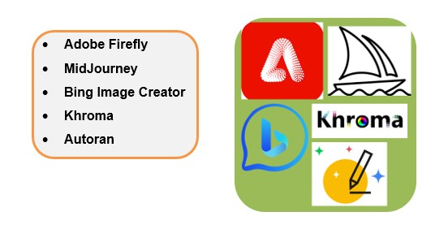

The Best AI Tools for Image Design
 AI tools for image design are revolutionizing the creative process, offering powerful capabilities for editing, enhancing, and creating visuals. These tools are enables both professionals and novices to create stunning visuals with ease operation. From auto-generating artistic images to enhancing photo quality and suggesting design layouts, these tools streamline the creative process, making advanced image design more accessible and efficient for everyone. There are several AI tools available for image design that can help designers create stunning visuals. Here are five highly recommended AI tools for image design as of 2023: